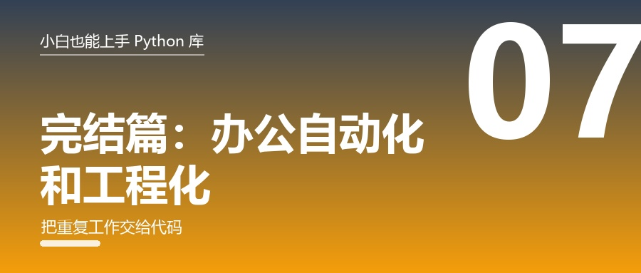

办公自动化 + 工程化：把重复工作交给代码，让代码看起来像老手

🎬 场景：每周一早上 9 点，你都要花 40 分钟做同一件事——
从三个 Excel 里抄数据 → 算汇总 → 贴进 Word 周报 → 调格式 → 发给老板。
这篇教你把它变成：双击一个图标，5 秒出结果。
顺便告诉你：为什么别人的代码"一看就像老手"。
一、办公自动化：把重复工作交出去
1.1 openpyxl —— 用代码写 Excel
🧠 人话：它能让程序生成 Excel —— 有表头、有格式、有公式、有多个 sheet。
🏠 生活比喻：你手工在 Excel 里敲一天，它能一秒敲一万行。
🔧 常用工具
| 工具 | 干什么 | 典型写法 |
|---|---|---|
Workbook() |
新建工作簿 | wb = Workbook() |
wb.active |
拿到当前工作表 | ws = wb.active |
ws.append([...]) |
追加一行（最常用） | ws.append(["张三", 686]) |
ws["A1"] = 值 |
按单元格写 | 也能写公式 "=SUM(B2:B3)" |
Font(bold=True) |
加粗 | 表头常用 |
PatternFill("solid", fgColor="4F81BD") |
底色 | 表头美化 |
ws.column_dimensions["A"].width = 14 |
调列宽 | 中文不挤 |
ws.freeze_panes = "A2" |
冻结首行 | 滚动表头不动 |
load_workbook("x.xlsx") |
读文件 | ws.iter_rows(values_only=True) |
wb.save("x.xlsx") |
保存 | 别忘 |
🚀 上手
from openpyxl import Workbook
from openpyxl.styles import Font, PatternFill
wb = Workbook(); ws = wb.active; ws.title = "成绩"
ws.append(["姓名", "分数"]) # 表头
for n, s in [("张三", 686), ("李四", 655)]:
ws.append([n, s])
ws["A1"].font = Font(bold=True, color="FFFFFF") # 表头白字
ws["A1"].fill = PatternFill("solid", fgColor="4F81BD")
ws.column_dimensions["A"].width = 14
ws.freeze_panes = "A2" # 冻结首行
wb.save("成绩表.xlsx")
print("生成成功")💡 小白提示：pip install openpyxl。它只支持.xlsx，老的.xls要用xlrd。
1.2 python-docx —— 用代码写 Word
🧠 人话：自动生成报告、合同、周报，格式统一、不会手抖。
🔧 常用工具
| 工具 | 干什么 | 典型写法 |
|---|---|---|
Document() |
新建文档 | doc = Document() |
doc.add_heading(文字, level=1) |
标题 | level 1~9 |
doc.add_paragraph(文字) |
段落 | 正文 |
doc.add_paragraph(文字, style="List Bullet") |
项目符号 | 还有 List Number |
doc.add_table(rows=1, cols=2) |
插表格 | 配合 style="Table Grid" |
table.add_row().cells |
加一行 | row[0].text = "…" |
doc.add_picture("图.png") |
插图 | 可加 width=Inches(6) |
doc.add_page_break() |
分页 | 长文档 |
doc.save("报告.docx") |
保存 | — |
🚀 上手
from docx import Document
doc = Document()
doc.add_heading("本周工作周报", level=1)
doc.add_paragraph("生成时间：2026-10-08")
t = doc.add_table(rows=1, cols=2); t.style = "Table Grid"
t.rows[0].cells[0].text = "日期"; t.rows[0].cells[1].text = "工时"
for d, h in [("周一", 8), ("周二", 7.5)]:
c = t.add_row().cells
c[0].text, c[1].text = d, str(h)
doc.add_paragraph("本周共 15.5 小时。")
doc.save("周报.docx")1.3 PDF 三件套
| 库 | 干什么 | 一句话 |
|---|---|---|
| pdfplumber | 提取 PDF 里的文字和表格 | 解析发票、报表 |
| pypdf | 拆分 / 合并 / 旋转 / 加密 | 批量整理 |
| reportlab | 生成 PDF | 做证书、发票 |
| PyMuPDF | PDF 转图片、极速提取 | 扫描件处理 |
import pdfplumber
with pdfplumber.open("发票.pdf") as pdf:
print("总共", len(pdf.pages), "页")
page = pdf.pages[0]
print(page.extract_text()[:100]) # 提取文字
for table in page.extract_tables():
print(table) # 提取表格（很强）from pypdf import PdfReader, PdfWriter # 合并两个 PDF
w = PdfWriter()
for f in ["a.pdf", "b.pdf"]:
for page in PdfReader(f).pages:
w.add_page(page)
w.write("合并后.pdf")⚠️ 扫描件（图片型 PDF）提不出文字，那种要配 OCR（pytesseract/easyocr）。
1.4 pyautogui —— 没有 API 的软件，就模拟鼠标
🧠 人话：程序替你动鼠标、敲键盘。给那些"没有接口、只能手动点"的软件做自动化。
🔧 常用工具
| 工具 | 干什么 | 典型写法 |
|---|---|---|
pyautogui.position() |
当前鼠标坐标 | 先用它量坐标 |
pyautogui.moveTo(x, y, duration=0.5) |
移动 | duration 是动画时长 |
pyautogui.click(x, y) |
点击 | 不传坐标就点当前位置 |
pyautogui.write("abc", interval=0.05) |
打字 | interval 防漏字 |
pyautogui.hotkey("ctrl", "s") |
组合键 | Ctrl+S、Ctrl+C |
pyautogui.screenshot("x.png") |
截图 | 存证/找图 |
locateCenterOnScreen("btn.png") |
找图（比坐标稳） | 配 confidence=0.9 |
pyautogui.FAILSAFE |
紧急中止 | 鼠标甩到左上角 |
import pyautogui, time
time.sleep(3) # 给自己 3 秒切窗口
pyautogui.click(400, 300) # 点一下
pyautogui.write("hello", interval=0.05) # 打字
pyautogui.hotkey("ctrl", "s") # 保存⚠️ 两条保命提示：① 鼠标快速甩到屏幕左上角可紧急停止；② 屏幕缩放会改变坐标，能用"找图"就别写死坐标。
1.5 schedule —— 让它每天自己跑
import schedule, time
def job():
print("该交周报了！")
schedule.every().day.at("20:00").do(job) # 每天 20:00
schedule.every(10).minutes.do(job) # 每 10 分钟
schedule.every().monday.at("09:00").do(job) # 每周一 9:00
while True: # 需要程序一直挂着
schedule.run_pending()
time.sleep(1)💡 Windows 上更省事的做法：直接把脚本丢进「启动」文件夹，或用系统自带的任务计划程序。
🎯 实战：一个"自动生成周报"脚本（完整可跑）
场景：从数据生成 Excel + Word 两份文件。
from openpyxl import Workbook
from docx import Document
from datetime import datetime
data = [("周一", 8), ("周二", 7.5), ("周三", 9), ("周四", 8.5), ("周五", 7)]
total = sum(h for _, h in data)
# ① 出 Excel
wb = Workbook(); ws = wb.active; ws.title = "工时"
ws.append(["日期", "工时"])
for d, h in data:
ws.append([d, h])
ws.append(["合计", total])
wb.save("周报.xlsx")
# ② 出 Word
doc = Document()
doc.add_heading("本周工作周报", level=1)
doc.add_paragraph("生成时间：" + datetime.now().strftime("%Y-%m-%d %H:%M"))
t = doc.add_table(rows=1, cols=2); t.style = "Table Grid"
t.rows[0].cells[0].text = "日期"; t.rows[0].cells[1].text = "工时"
for d, h in data:
c = t.add_row().cells; c[0].text, c[1].text = d, str(h)
doc.add_paragraph("本周共 %.1f 小时，平均每天 %.1f 小时。" % (total, total / len(data)))
doc.save("周报.docx")
print("已生成 周报.xlsx 和 周报.docx，总工时:", total)运行结果：
已生成 周报.xlsx 和 周报.docx，总工时: 40.0这类脚本的价值：写一次，以后每周点一下就行。 这就是"自动化"最朴素也最实用的形态。
二、工程化：让代码看起来像老手
功能写出来了，但代码"一看就是新手"？这一节就是治这个的。
不用全学，挑 3 个用起来，气质立刻不一样。
2.1 loguru —— 别再用 print 调试了
🧠 人话：一行搞定漂亮的日志：有时间、有级别、能落盘、出错自动带完整堆栈。
🔧 常用工具
| 工具 | 干什么 | 典型写法 |
|---|---|---|
logger.add("run.log") |
日志写文件 | 加 rotation="10 MB" 自动切割 |
logger.info / .warning / .error |
分级日志 | 按重要性打 |
logger.success("完成") |
成功（绿色的） | 好看 |
logger.exception("出错了") |
自动附完整堆栈 | 写在 except 里 |
logger.debug(变量) |
调试信息 | 配 level="DEBUG" |
from loguru import logger
logger.add("run.log", rotation="10 MB", encoding="utf-8")
logger.info("程序启动")
try:
1 / 0
except ZeroDivisionError:
logger.exception("这里出错了") # 日志文件里有完整调用栈2.2 tqdm + tenacity —— 一个给眼睛，一个给耐心
from tqdm import tqdm
for i in tqdm(range(100), desc="处理中"): # 一行就有进度条
passfrom tenacity import retry, stop_after_attempt, wait_fixed
@retry(stop=stop_after_attempt(3), wait=wait_fixed(2)) # 失败自动重试 3 次
def fetch(url):
...| 库 | 干什么 | 什么时候用 |
|---|---|---|
| tqdm | 进度条 | 任何"跑很久"的循环 |
| tenacity | 自动重试 | 网络请求、调接口 |
2.3 pytest —— "敢改代码"的底气
🧠 人话：给函数写几行断言，改完代码一键验证有没有改坏别的地方。
🔧 常用工具
| 工具 | 干什么 | 典型写法 |
|---|---|---|
文件名 test_*.py |
约定 | pytest 只认这个命名 |
def test_xxx(): |
一个测试 | 函数名也要 test_ 开头 |
assert 表达式 |
断言 | 失败就报错 |
pytest.raises(异常) |
断言"这里该报错" | 测异常分支 |
@pytest.mark.parametrize |
一次测多组数据 | 表驱动 |
命令行 pytest -v |
跑测试 | -k 名字 只跑部分 |
# test_score.py
def analyze(score, line):
if score >= line: return "稳妥"
if score >= line - 10: return "冲刺"
return "暂不推荐"
def test_safe(): assert analyze(686, 680) == "稳妥"
def test_challenge(): assert analyze(686, 690) == "冲刺"
import pytest
@pytest.mark.parametrize("s,l,e", [(700,700,"稳妥"), (695,700,"冲刺")])
def test_more(s, l, e): assert analyze(s, l) == epytest -v2.4 代码质量三件套
| 工具 | 干什么 | 一行命令 |
|---|---|---|
| ruff | 检查 + 自动修复 + 格式化（一个顶三个） | ruff check . --fix |
| black | 自动格式化 | black . |
| mypy | 静态类型检查（提前发现传错类型） | mypy main.py |
| isort | 整理 import 顺序 | isort . |
| pre-commit | 提交前自动跑检查 | pre-commit install |
💡 对新手的价值：ruff 会告诉你"变量定义了没用""import 了没用""这行太长"——
相当于一个免费的老师盯着你写代码。
2.5 rich + typer —— 让命令行也体面
from rich.console import Console
from rich.table import Table
c = Console()
t = Table(title="我的成绩表")
t.add_column("姓名"); t.add_column("分数", justify="right")
t.add_row("张三", "686"); t.add_row("李四", "655")
c.print(t)
c.print("[bold green]分析完成！[/bold green]")# typer：几行写一个专业命令行工具
import typer
app = typer.Typer()
@app.command()
def analyze(score: int, city: str = "杭州"):
"""根据分数给出建议（试试 --help）"""
typer.echo("稳妥" if score >= 680 else "冲刺")
if __name__ == "__main__":
app()python cli.py analyze 686 --city 杭州
python cli.py --help # 自动生成的帮助文档2.6 配置与密钥：.env 的正确姿势
🧠 人话：密码、API Key 绝不能写死在代码里。放在 .env 文件里，用 python-dotenv 读。
import os
from dotenv import load_dotenv
load_dotenv() # 读取同目录的 .env
key = os.getenv("OPENAI_API_KEY") # .env 里写 OPENAI_API_KEY=sk-xxxxx
print("读到密钥:", key[:6] + "…")🔧 常用工具
| 工具 | 干什么 | 典型写法 |
|---|---|---|
load_dotenv() |
读 .env |
程序开头调一次 |
os.getenv("KEY", 默认值) |
取配置 | 给默认值更稳 |
yaml.safe_load(文件) |
读 YAML 配置 | 复杂配置用它 |
json.dumps(d, ensure_ascii=False) |
存 JSON（中文不转义） | 存数据 |
⚠️ 务必把.env加进.gitignore！否则推送到 GitHub 后，密钥几分钟内就可能被盗用。
三、120 个库的全景地图
前面 6 篇讲的是"怎么用"，这一页是"有什么"。
忘了我还有什么牌可以打的时候，回来翻这一页。
📊 数据处理
| 库 | 人话 | 最常用工具 |
|---|---|---|
| numpy | 数字整体运算 | np.array()、arr.mean()、arr.reshape() |
| pandas | Python 版 Excel | read_csv()、df[条件]、groupby()、to_excel() |
| matplotlib | 画图 | plot()、bar()、hist()、savefig() |
| seaborn | 好看的统计图 | sns.barplot()、sns.heatmap() |
| polars | 更快的大表处理 | pl.read_csv()、filter()、group_by() |
| scipy | 科学计算 | optimize.minimize()、stats.describe() |
| sympy | 符号数学（算公式） | solve()、diff()、integrate() |
| statsmodels | 专业统计 | OLS()、adfuller() |
| pyarrow | 列式存储 | to_parquet() |
🧮 算法与数据结构（多半不用装）
| 库 | 人话 | 最常用工具 |
|---|---|---|
| collections | 计数 / 队列 / 默认字典 | Counter()、deque()、defaultdict(list) |
| heapq | 最小堆 | heapify()、heappop()、nlargest() |
| bisect | 二分查找 | bisect_left()、insort() |
| itertools | 排列组合 | combinations()、permutations()、product() |
| functools | 记忆化 | @lru_cache |
| sortedcontainers | 永远有序的表 | SortedList()、.add()、.bisect_left() |
| more-itertools | 滑动窗口 / 分块 | windowed()、chunked() |
| networkx | 图论 | Graph()、shortest_path() |
| z3-solver | 约束求解 | Solver()、s.add()、s.model() |
| ortools / pulp | 线性规划 | LinearSolver() |
🕷 爬虫与采集
| 库 | 人话 | 最常用工具 |
|---|---|---|
| requests | 发 HTTP 请求 | get()、post()、r.json()、timeout= |
| httpx | 异步 HTTP | AsyncClient()、asyncio.gather() |
| beautifulsoup4 | 从 HTML 挑数据 | select()、select_one()、get_text() |
| lxml | 高速解析器 | BeautifulSoup(html, "lxml") |
| parsel | XPath / CSS | Selector().css()、.xpath() |
| playwright | 开真浏览器 | page.goto()、wait_for_selector()、screenshot() |
| selenium | 老牌浏览器自动化 | webdriver.Chrome()、find_elements() |
| scrapy | 大爬虫框架 | scrapy startproject、yield |
| tenacity | 自动重试 | @retry(stop_after_attempt(3)) |
| tqdm | 进度条 | for x in tqdm(items) |
| fake-useragent | 随机 UA | UserAgent().random |
🔐 网络与安全（⚠️ 只在自己的设备 / 授权目标 / 靶场）
| 库 | 人话 | 最常用工具 |
|---|---|---|
| socket | 网络地基 | socket()、connect_ex()、gethostbyname() |
| hashlib | 哈希指纹 | sha256().hexdigest() |
| hmac | 带密钥的签名 | hmac.new()、compare_digest() |
| secrets | 安全随机 | token_urlsafe()、randbelow() |
| bcrypt | 存密码唯一正解 | hashpw()、checkpw() |
| cryptography | 真加密 | Fernet()、rsa.generate_private_key() |
| pyjwt | JWT | jwt.encode()、jwt.decode(algorithms=[...]) |
| scapy | 看网络包 | IP()/TCP()、sniff() |
| python-nmap | 端口探测 | PortScanner().scan("127.0.0.1") |
| dnspython | DNS 查询 | dns.resolver.resolve() |
| psutil | 系统监控 | cpu_percent()、virtual_memory() |
| mitmproxy | 看自己 App 的流量 | mitmweb |
| bandit / pip-audit | 扫自己代码 / 依赖的漏洞 | bandit -r .、pip-audit |
| yara-python | 恶意文件特征匹配（防守） | yara.compile()、rule.match() |
| capstone / pefile | 反汇编 / 解析 exe | Cs().disasm()、pefile.PE() |
🤖 AI 与机器学习
| 库 | 人话 | 最常用工具 |
|---|---|---|
| scikit-learn | 传统机器学习 | train_test_split()、fit()、predict() |
| xgboost / lightgbm | 表格数据最强 | XGBClassifier()、early_stopping_rounds |
| pytorch | 深度学习 | nn.Sequential()、loss.backward()、opt.step() |
| transformers | 一行用预训练模型 | pipeline("sentiment-analysis") |
| sentence-transformers | 句子转向量 | model.encode()、cos_sim() |
| datasets | 一行下数据集 | load_dataset("imdb") |
| openai | 调大模型 | client.chat.completions.create() |
| tiktoken | 数 token（算钱） | enc.encode(text) |
| peft | 低成本微调（LoRA） | get_peft_model() |
| langchain | 串大模型 + 你的数据（RAG） | RetrievalQA、Document |
| jieba | 中文分词 | jieba.lcut()、analyse.extract_tags() |
| pypinyin | 汉字转拼音 | lazy_pinyin() |
| snownlp | 中文情感 | SnowNLP(t).sentiments |
| wordcloud | 词云 | WordCloud().generate() |
🌐 Web 后端
| 库 | 人话 | 最常用工具 |
|---|---|---|
| fastapi | 写接口 + 自动文档 | @app.post()、BaseModel、/docs |
| flask | 最轻量 Web 框架 | @app.get()、render_template() |
| django | 全家桶 | django-admin startproject、admin |
| uvicorn / gunicorn | 服务器 | uvicorn main:app --reload |
| pydantic | 数据校验 | BaseModel、Field(ge=0) |
| sqlalchemy | ORM | create_engine()、Session、select() |
| jinja2 | 模板 | {{ 变量 }}、{% for %} |
| streamlit | 几行做数据网页 | st.dataframe()、st.bar_chart() |
| gradio | 几行做 AI 界面 | gr.Interface() |
📄 办公与文档
| 库 | 人话 | 最常用工具 |
|---|---|---|
| openpyxl | 写 Excel | Workbook()、ws.append()、save() |
| python-docx | 写 Word | Document()、add_heading()、add_table() |
| python-pptx | 写 PPT | Presentation()、add_slide() |
| pdfplumber | 提取 PDF 文字/表格 | extract_text()、extract_tables() |
| pypdf | PDF 拆分合并 | PdfReader()、PdfWriter() |
| PyMuPDF | PDF 转图片 | pymupdf.open()、get_pixmap() |
| reportlab | 生成 PDF | canvas.Canvas()、drawString() |
| pyautogui | 模拟鼠标键盘 | click()、write()、hotkey() |
| schedule | 定时任务 | schedule.every().day.at() |
| pyinstaller | 打包成 exe | pyinstaller -F -w 脚本.py |
🖼 图像 · 音视频 · OCR
| 库 | 人话 | 最常用工具 |
|---|---|---|
| Pillow | 改图片 | Image.open()、resize()、save() |
| opencv-python | 计算机视觉 | imread()、Canny()、CascadeClassifier() |
| pytesseract / easyocr | 图片里的字 → 文本 | image_to_string()、Reader().readtext() |
| moviepy | 剪视频 | VideoFileClip()、subclipped() |
| pydub | 剪音频 | AudioSegment.from_mp3() |
| whisper | 语音转文字 | model.transcribe() |
| qrcode / pyzbar | 生成 / 识别二维码 | qrcode.make()、decode() |
🗄 数据库
| 库 | 人话 | 最常用工具 |
|---|---|---|
| sqlite3 | 单文件数据库（首选） | connect()、execute()、commit() |
| pymysql / psycopg | 连 MySQL / PostgreSQL | connect()、cursor() |
| pymongo | 连 MongoDB | MongoClient()、find() |
| redis | 缓存 / 队列 / 计数 | set(ex=60)、incr()、lpush() |
| duckdb | 直接用 SQL 查 CSV | duckdb.sql("SELECT … FROM 'a.csv'") |
| alembic | 数据库迁移 | alembic revision --autogenerate |
🛠 工程化
| 库 | 人话 | 最常用工具 |
|---|---|---|
| pytest | 自动化测试 | assert、pytest.raises、parametrize |
| ruff | 检查 + 格式化 | ruff check . --fix、ruff format . |
| black / isort | 格式化 / import 排序 | black .、isort . |
| mypy | 类型检查 | mypy main.py |
| loguru | 漂亮日志 | logger.add()、logger.exception() |
| tqdm | 进度条 | tqdm(items) |
| rich | 终端美化 | Console().print(Table()) |
| typer / click | 命令行工具 | @app.command() |
| python-dotenv | 读 .env |
load_dotenv() |
| PyYAML | 读写 YAML | yaml.safe_load() |
四、给新手的 30 天上手计划
每天 20 分钟，不用很努力，但要连续。
| 阶段 | 目标 | 做什么 | 用到什么 |
|---|---|---|---|
| 第 1 周 | 环境 + 有成就感 | 装好 Python 和 venv；跑通 3 个小例子（Excel、图片水印、二维码） | pip、openpyxl、Pillow、qrcode |
| 第 2 周 | 会处理数据 | 找一份自己的数据（成绩/账单/运动记录），做筛选、统计、画图 | numpy、pandas、matplotlib |
| 第 3 周 | 会抓数据 | 抓 3 页公开数据 → 存进 sqlite → 导出 Excel | requests、BeautifulSoup、sqlite3 |
| 第 4 周 | 会交付 | 把前 3 周的东西串成一个脚本，加上日志和进度条；再用 pyinstaller 打成 exe 发给朋友 | loguru、tqdm、pyinstaller |
每周日花 10 分钟做一件事：把这周的代码发出去（公众号 / 朋友圈 / 同学群）。
「讲一遍」比「看十遍」有用得多。
五、新手最容易踩的 12 个坑（速查）
| # | 坑 | 正确做法 |
|---|---|---|
| 1 | ModuleNotFoundError 就怀疑代码 |
先 pip install，并确认在当前虚拟环境里 |
| 2 | requests 不加 timeout |
永远加，否则永久卡住 |
| 3 | 网页中文乱码 | r.encoding = r.apparent_encoding |
| 4 | select_one 返回 None 就崩 |
先 if tag: 再取值 |
| 5 | 抓到的链接打不开 | urljoin(当前页, href) |
| 6 | 用 f-string 拼 SQL | 永远用 ? 占位符 |
| 7 | 用 MD5 存密码 | 用 bcrypt |
| 8 | 用 random 生成 Token |
用 secrets |
| 9 | API Key 写死在代码里 | .env + python-dotenv + .gitignore |
| 10 | matplotlib 中文变方框 | 设 font.sans-serif |
| 11 | lst = lst.sort() 变成 None |
sort() 原地改；要新表用 sorted() |
| 12 | 所有代码堆在一个文件里 | 用函数拆开，一个函数干一件事 |
📌 这个系列，你一共学到了什么
| 篇 | 主题 | 核心收获 |
|---|---|---|
| 01 | 学完语法卡住 | 环境 + 装库 + 看报错 + 3 个立刻上手的小库 |
| 02 | 数据处理三件套 | numpy / pandas / matplotlib，把表格变成结论 |
| 03 | 7 件算法神器 | 不装任何库，让代码快一万倍 |
| 04 | 爬虫入门 | requests + BeautifulSoup + sqlite3，附合规红线 |
| 05 | 网络安全第一课 | 哈希 vs 加密、bcrypt 存密码、防守方向 |
| 06 | AI 入门 | 中文处理 + sklearn + 大模型 API，不训练模型也能做 AI |
| 07 | 办公自动化 + 工程化 | 把重复工作交出去，让代码看起来像老手 |
一共覆盖 120+ 个库。但你不需要全学——按第 30 天计划挑一条走下去就行。
🎯 最后一个小作业（今晚就能做完）
用 openpyxl 生成一张"我的本周时间账单"：
- 写下你这周每天的学习时长
- 用 openpyxl 生成 Excel：表头 + 每天一行 + 合计
- 给表头加个底色、把列宽调宽一点
- 保存成
我的时间账单.xlsx
做完之后你会突然明白一件事：
原来"让电脑替我干活"，门槛没有想象中那么高。
写在最最后
回头看这一路：
从"学完语法就卡住"，到"知道有 120 个库可以用"，再到"能用它们做出真东西"——
中间缺的从来不是天赋，而是有人告诉你：先做什么、再做什么。
如果这个系列帮你少走了三个月弯路，那我就没白写。
👉 如果这 7 篇对你有帮助，欢迎「点赞」「在看」
👉 转发给那个"学完 Python 语法就卡住"的朋友 —— 他大概正需要这个
👉 关注我，后续会更新：每个方向的完整实战项目拆解（带可运行代码）
本文所有示例均以"合法、安全、可运行"为前提。
网络与安全部分请只在自己的设备、有书面授权的目标，或靶场 / CTF 中练习。